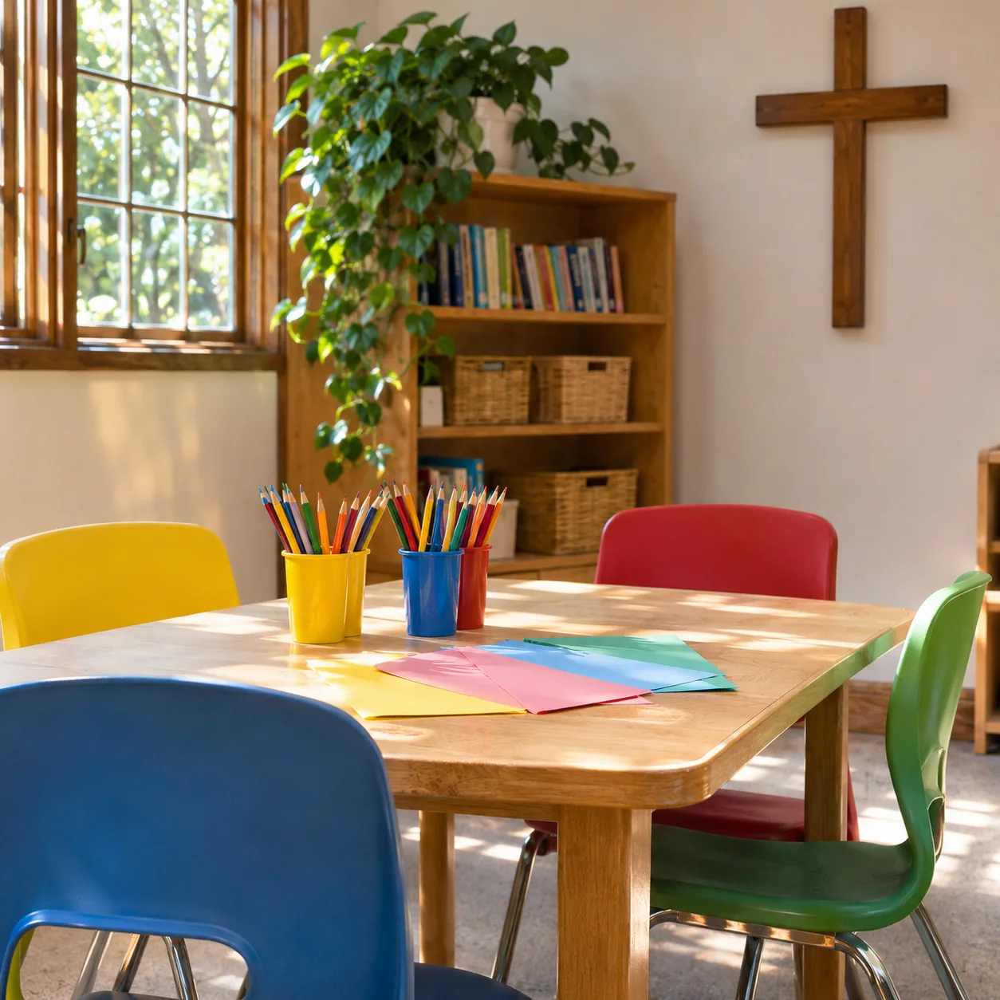
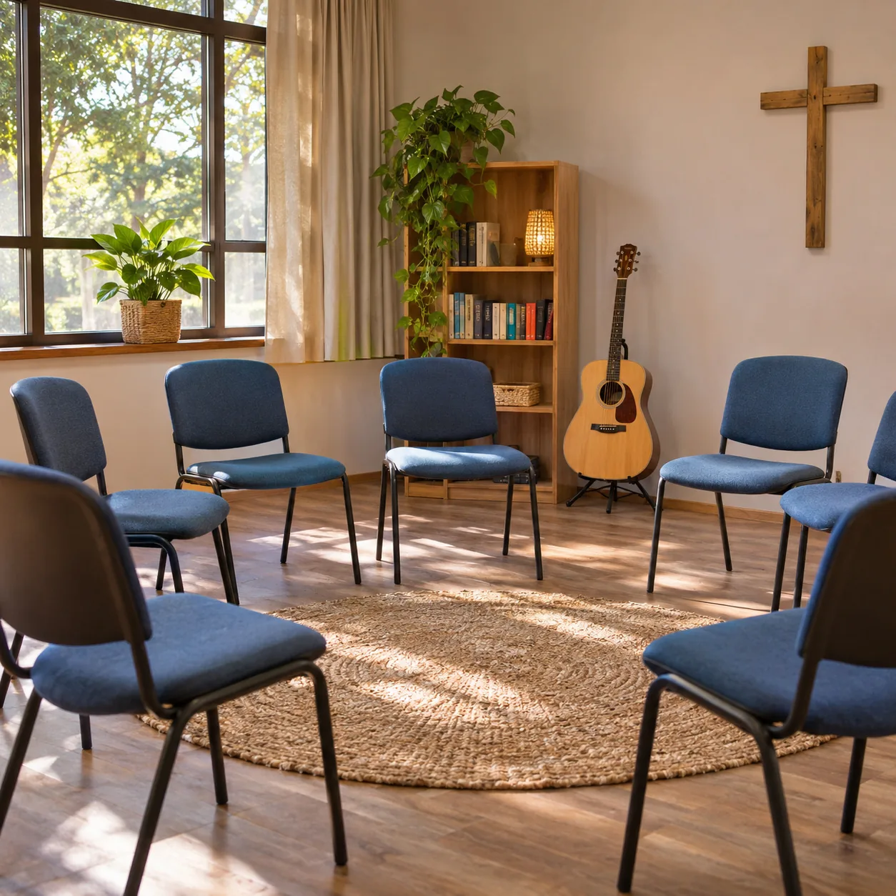
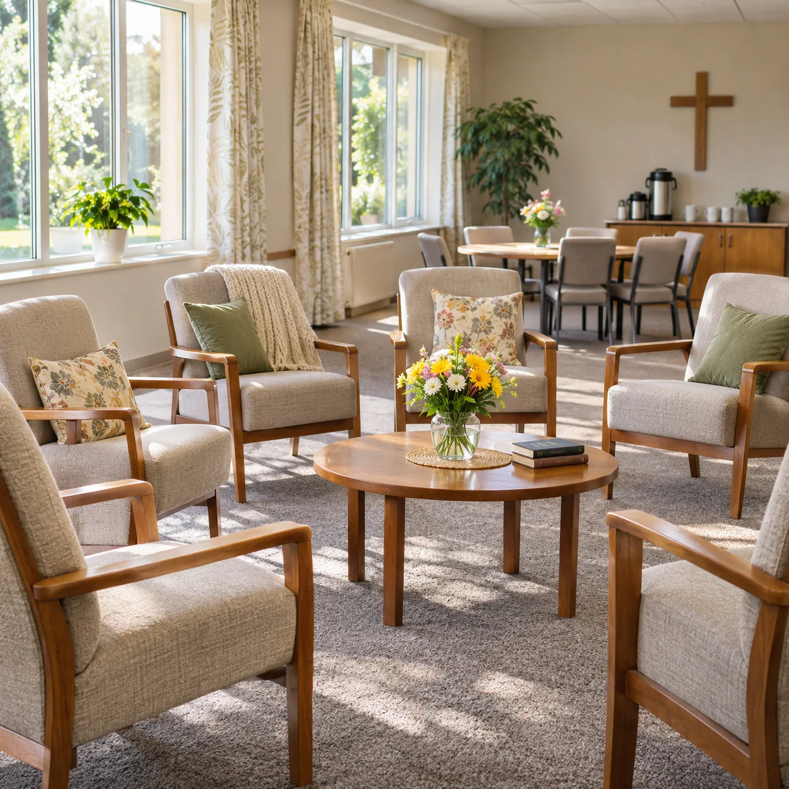
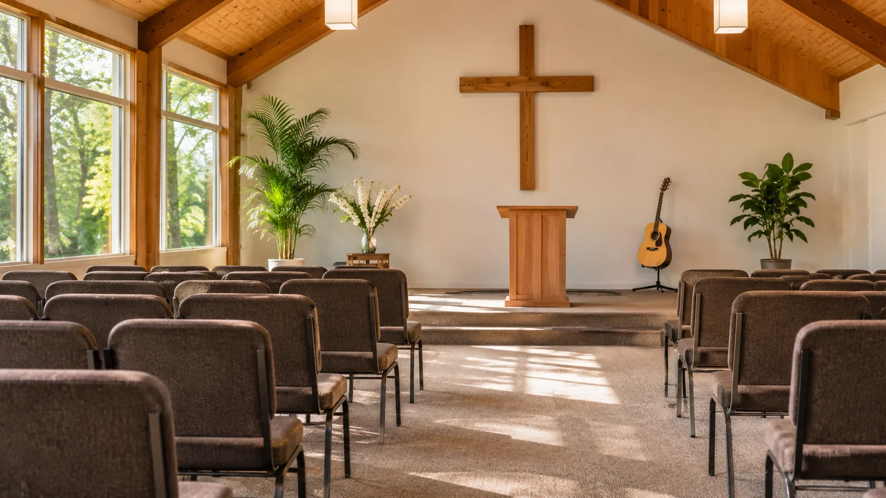
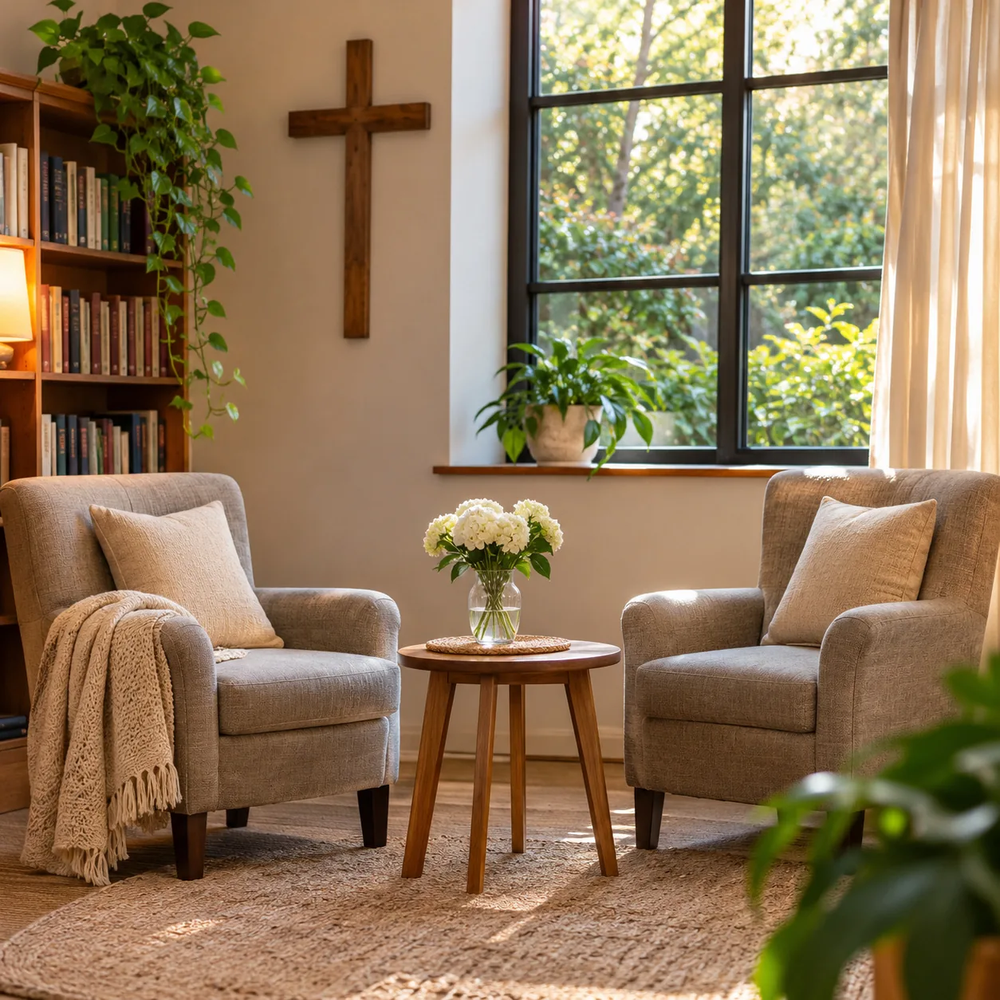
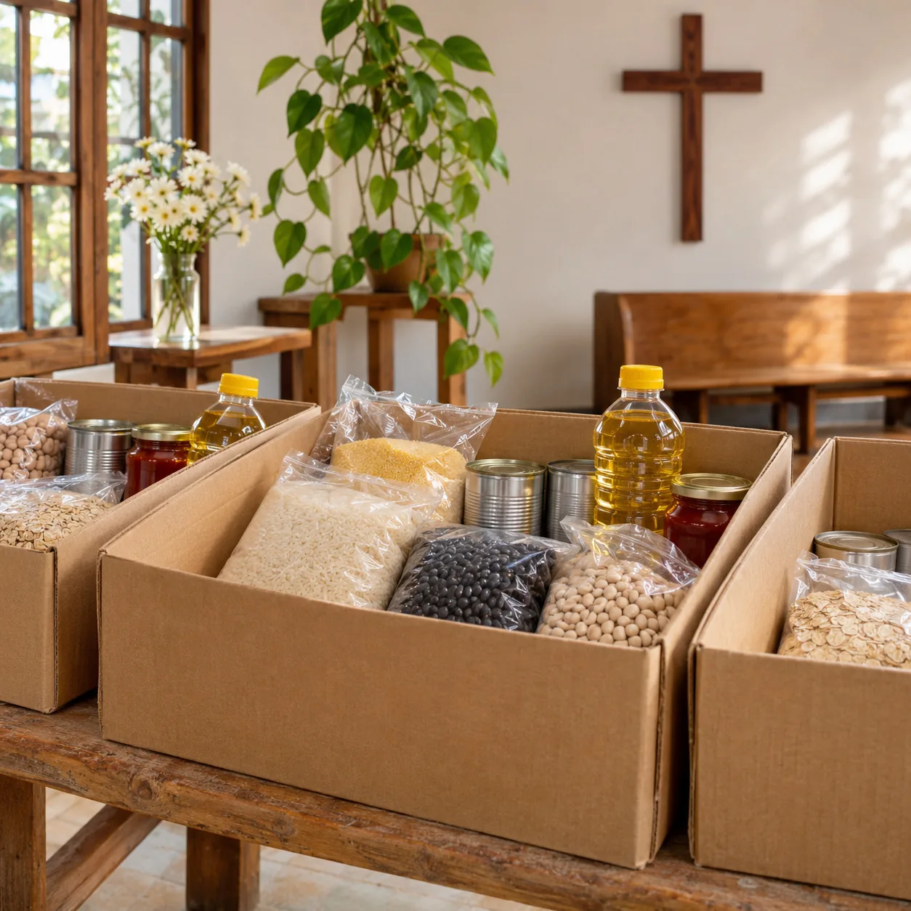

01
Niños y preadolescentes
Un espacio para aprender valores bíblicos y compartir con otros.
Consultá por el grupoJesucristoUn Estilo de Vida
Iglesia evangélica cristiana
Un espacio para acercarte a Dios, compartir con otros y encontrar acompañamiento para tu familia.
Actividades durante la semana
Para crecer en la fe, conversar y compartir. Consultanos por días, horarios y grupos.

Un espacio para aprender valores bíblicos y compartir con otros.
Consultá por el grupo
Encuentros para compartir preguntas, vínculos y vida de fe.
Consultá por el grupoUn lugar de encuentro y contención para la vida personal y familiar.
Consultá por el grupo
Compañía, escucha y comunidad para seguir compartiendo el camino.
Consultá por el grupo
Quiénes somos
Somos Jesucristo Un Estilo de Vida, una iglesia evangélica cristiana que promueve los valores bíblicos y la solidaridad.
Brindamos ayuda espiritual, emocional y contención familiar. Creemos en compartir la vida, escuchar y estar cerca.
Promover los valores bíblicos cristianos en la vida cotidiana, con vínculos que acompañan a cada generación.
Brindar ayuda espiritual, emocional y contención familiar, haciendo de la solidaridad una forma de estar presentes.
Imágenes, videos y comunidad
Conocé la vida de la iglesia, sus novedades y los videos que compartimos en Instagram.
Ver videos en Instagram Seguí a @iglesiajuevAcompañamiento y solidaridad
La iglesia es también un lugar para conversar sobre lo que estás viviendo y encontrar contención espiritual, emocional y familiar.
Si necesitás hablar o querés conocer cómo participar de las acciones solidarias, escribinos.
Quiero conversar

Contacto
Si querés acercarte, conocer una actividad o conversar con alguien de la iglesia, estamos para escucharte.
Hablemos por WhatsApp+54 9 221 522-8202Escribinos para confirmar los horarios y la dirección antes de venir.
Instagram · @iglesiajuev